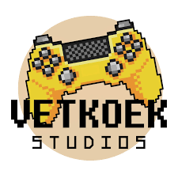

Gnome Game
DESTROY THE H&M!
Gnome Game (2024) is an action game inspired by the gnome invading H&M meme. Play as a gnome who wreaks havoc on an H&M, evade or attack guards that chase you, and collect butterflies along the way. This game is interesting because it demonstrates how small ideas or moments can be expaded through the structure of solid gameplay.


×
 ❮
❯
❮
❯

Developed by Vetkoek Studios
Based in Rosebank, Johannesburg. This studio is comprised of South Africans from primarily Johannesburg, with many coming from the University of the Witwatersrand and even past or present Nyamakop members. Click here to see more by them.